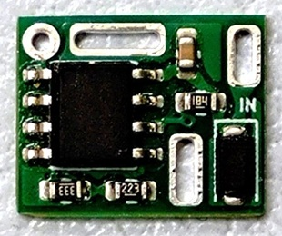

10V Blocker
2026年02月13日 カテゴリー：自作エフェクター（アナログ）

10V以上の電圧が入力されると、電源供給を遮断するモジュールです。誤って高い電圧をエフェクターに接続した場合に、回路を保護することができます。KiCadデータ・説明書はGitHubにあります。
→ 販売ページはこちら。
開発記録
現在普及しているパワーサプライは、多くの機種で電圧を上げる機能が搭載されており、簡単に12Vや18Vを供給することが可能になりました。ただ、定格電圧が低い部品が使われているエフェクターに高い電圧が供給されると故障してしまいます。こうしたケースを防止するための対策を考えることにしました。
まず、単純に定格電圧が高い部品を使用するという対策が考えられます。コンデンサは、多少大きいものが必要になることがあります。オペアンプは、低電圧向けのものが採用できなくなります。また、回路方式によっては電圧の違いにより音が変わってしまいます。よって、コストはかかりますが電源部に何かしらの回路を追加する方針で以下のものを考えました。
低ドロップアウト（LDO）レギュレータ
ORIGIN EFFECTS RevivalDRIVE Compact 解析やMXR Super Badass Distortionで採用されています。わずかながら電圧が下がるのが気になります。また、LDOだと安価で入力電圧が高いものがなかなかありません。
汎用部品の組み合わせ
BOSS FZ-1WやMXR CARBON COPYで採用されています。部品数が多く、あまりコンパクトにはなりません。また、ツェナーダイオードのツェナー電圧やトランジスタのベース・エミッタ間電圧が基準なので、精度がよくありません。
専用IC（Voltage Detector/Reset IC、eFuse）
価格が高くなったり製造終了したりする問題が考えられますが、高精度で省スペースになることが期待できます。TPS3701（MOSFETと組み合わせ）、TPS25961、MX25947が候補となりましたが、最終的に30Vまで対応でオン抵抗が低いMX25947を採用することにしました。
回路図

過電圧検出電圧がデータシート記載の1.34Vとは違い、実測1.42Vでした。個体差とは思えない値なので、データシートのミスかもしれません。内蔵MOSFETのオフ時の抵抗値はデータシートになく、数百kΩとそこまで高くないようです。消費電流がかなり低い場合は注意が必要ですが、エフェクターの場合には問題ないでしょう。
出荷前に10V～10.3Vで遮断されることを確認しています。抵抗値を変えると遮断電圧を調整できます。
新品の電池
消費電流が小さい場合、電圧が10Vを超える可能性があります。過去に測定した中では、GPマンガン乾電池で10mA以下の場合が該当しました。R103を小さく（220kΩ抵抗を並列にする等）し、遮断電圧を上げると対応できます。
昇圧IC MAX1044の保護
絶対最大定格電圧が10.5Vなので、R101を小さく（2.2MΩ抵抗を並列にする等）し遮断電圧を下げる方が安心です。ただし、9.6Vといった高めの電圧が供給されるパワーサプライに注意が必要となります。